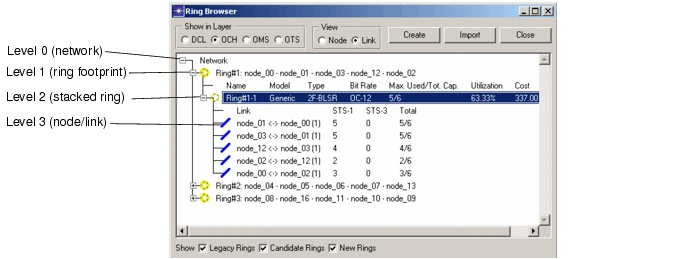

Viewing and Configuring Objects > Ring Browser
Ring Browser
The Ring Browser lists rings by ring footprint (that is, the nodes that constitute the path of the ring). One footprint can support multiple stacked rings with different types and bit rates.
To open the Ring Browser, choose Network > Ring Browser or click on the Browse Rings toolbar button. For information about the viewing controls, see Table 4-13. For descriptions of the fields shown in the treeview, see Table 4-15-Ring Browser: Treeview.
Figure 4-18 Ring Browser

- Link—Provides an overview of the links in the ring and the traffic used and available on that link.
- Node—Shows the nodes of the ring. The icon for each node indicates whether the node contains an ADM for that ring, or an MSSP (collecting multiple rings). Each node icon provides information on the amount of add/drop and transit traffic at the different bit rates.
Ring Usage Types
When you create or import rings, you can specify one of the ring types listed in Table 4-14. For more information about rings, see Ring Design .
- Delete Ring—You can delete a ring footprint only if there are no stacked rings on that footprint
- Rename Ring—Change the name of the ring
- Add Stacked Ring—Add a new stacked ring of a specified type and bit rate
- Ring Design Options—Opens the Ring Design Options (for more information, see Setting Ring Design Options)
- Convert to Legacy/New/Candidate Ring—Convert the ring to a different type (depending on the current ring type and whether the ring has traffic routed on it, some conversions might be impossible)
- Name—Name of the ring
- Model—Ring Model
- Type—Ring Type (UPSR, 2F-BLSR or 4F-BLSR)
- Bit Rate—Bit rate of the ring
- Max Used/Tot. Cap—Maximum used capacity on the link of the ring which carries most traffic and total ring capacity (the usable capacity on each link)
- Utilization—The used capacity on all links as a percentage of the total usable capacity on all the links
- Cost—Cost of all the ring nodes
- Pinned—Yes if the ring is pinned, No if not
Setting Ring Design Options
To set the ring design options for a ring, right-click on the ring footprint element and choose Ring Design Options. For more information about rings, see Ring Design.
Figure 4-19 Ring Design Options Dialog Box
| Home © 1987-2007 OPNET Technologies, Inc. All Rights Reserved. This software may be covered by one or more U.S. Patents. See complete patent notice in the Legal Notices section. OPNET Support Center |